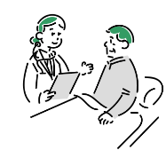

ここ山形の地で当院を開院し30年が経ちました。
皆様の笑顔を守るお手伝いをさせていただきました。
いつも皆様のそばにある”山形県民のかかりつけ医”として
これからも誠心誠意対応させていただきます。
以下の検査項目以外でも、まずはご相談頂けますと幸いです。
風邪、扁桃腺炎、発熱、胸痛、むくみ、 動悸、疲れ・疲労、だるい、体重減少、 立ちくらみ、嘔気、嘔吐、吐き気、胸焼け、 食欲不振・減退、肩こり、花粉症、蕁麻疹、 アレルギー性鼻炎など
狭心症、心筋梗塞、心不全、心臓弁膜症、 不整脈、大動脈瘤、心筋症、心臓発作、 動脈硬化症、急性冠動脈症候群など

腹痛、急性・慢性胃炎、胃痛、胃・ 十二指腸潰瘍、下痢、便秘、逆流性食道炎、 過敏性腸症候群、食中毒、胃痙攣、胃下垂、 胃もたれ、心窩部（みぞおち）の痛み、 胆石症、急性・慢性肝炎、自己免疫性肝炎、 脂肪肝、B型肝炎、C型肝炎、肝硬変など